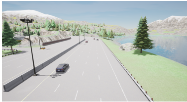
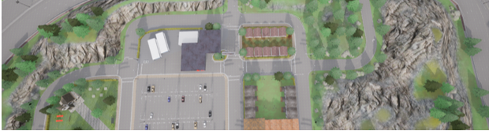
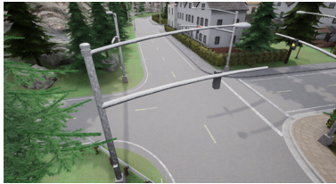
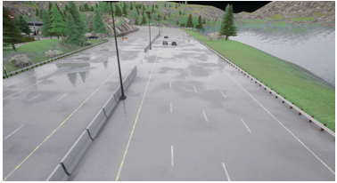
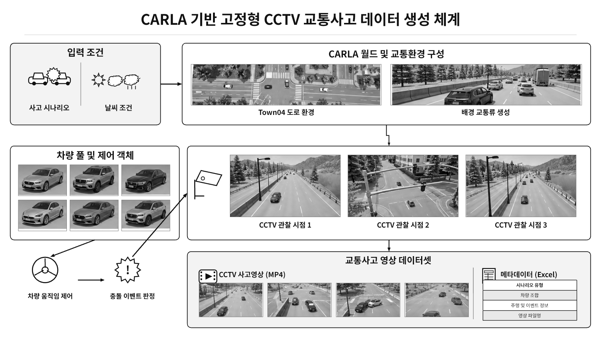

01
후방추돌
동일 차로의 선행 차량이 감속하고 후행 차량이 접근하면서 충돌 상황을 형성합니다.
OVERVIEW
실제 교통사고 영상은 발생 시점이 불규칙하고 수집과 공개에 제약이 있습니다. 본 연구는 CARLA Town04에서 사고 차량의 조합, 주행 조건, 날씨를 설정하고 동일한 절차로 고정형 CCTV 영상을 생성하는 방법을 제안합니다.
CCTV 영상은 차량 탑재 시점이 아니라 도로 주변의 고정 관찰 시점에서 수집합니다. 충돌 센서와 차량 간 거리 조건으로 충돌 여부를 판정하고, 영상 프레임과 이벤트 정보를 동기화하여 MP4 영상과 Excel 메타데이터로 저장합니다.

SCENARIOS
후방추돌, 교차로 충돌과 동시 차선변경 시나리오를 각각 324회 실행했습니다.

동일 차로의 선행 차량이 감속하고 후행 차량이 접근하면서 충돌 상황을 형성합니다.

서로 다른 진입 방향의 두 차량이 교차로 내부에서 이동 경로가 중첩되도록 구성합니다.

서로 다른 차로의 두 차량이 동일한 목표 차로로 진입하며 이동 경로가 중첩됩니다.
WORKFLOW
실험 조건 설정부터 CCTV 영상과 메타데이터 저장까지 동일한 절차를 반복합니다.

DATA FORMAT
각 시나리오 324개씩 총 972개 영상과 972행의 통합 Excel 메타데이터로 구성됩니다.
IMPLEMENTATION
main.py실험 조건과 전체 반복 실행 관리scenarios.py차량 배치, 행동 제어, 충돌 판정scenario_motion.py속도 변화와 차선변경 제어traffic_add.py주변 교통류 생성과 정리videodownload_module_system.pyCCTV 프레임 수집, 영상 및 메타데이터 저장RELEASE STATUS
972개 영상과 통합 메타데이터를 확인했습니다. 영상은 시나리오별 GitHub Release 파일로 분할하고, 코드와 웹페이지는 저장소에서 관리할 예정입니다.